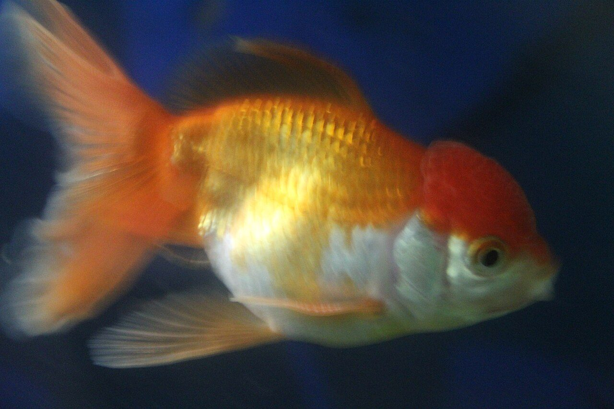

Antidepressivos nos rios afetam peixes mais que humanos, mostra estudo
Proteínas cerebrais de peixes reagiram a remédios comuns em concentrações até dez vezes menores que as humanas, nos mesmos níveis já medidos em rios poluídos.

Os antidepressivos que passam pelo nosso corpo não somem quando chegam ao esgoto. Boa parte segue biologicamente ativa, escapa do tratamento de água e termina nos rios. Um estudo japonês publicado na revista Environmental Science & Technology dá a esse problema antigo um dado novo e desconfortável: nos peixes, os alvos moleculares desses remédios podem ser bem mais sensíveis do que nos humanos.
O que fizeram
A equipe da Universidade de Ciência de Tóquio clonou os genes de quatro proteínas transportadoras (de dopamina, de noradrenalina e duas variantes do transportador de serotonina, chamadas SERTa e SERTb) de duas espécies de peixe evolutivamente distantes: o medaka e o ayu. Produziu essas proteínas em células humanas geneticamente modificadas e mediu o quanto cada antidepressivo bloqueava cada uma. A variante SERTa foi sempre muito mais sensível que a SERTb, o que importa porque o transportador humano pertence justamente à linhagem SERTa. E, em vários casos, o SERTa dos peixes respondeu a concentrações mais de dez vezes menores que o humano.
Foram testados remédios de uso muito comum, como duloxetina, fluoxetina, citalopram e paroxetina. Um detalhe chamou atenção: alguns compostos que, em humanos, nem costumam agir sobre essas proteínas ainda assim bloquearam as versões dos peixes, o que, segundo os autores, pode apontar efeitos colaterais que a farmacologia humana sozinha não preveria.
Por que vira alerta
O ponto que transforma a curiosidade em alerta é a dose. As concentrações que bloquearam os transportadores dos peixes no laboratório, na faixa de centenas até cerca de 1.300 nanogramas por litro, coincidem com níveis de antidepressivos já detectados em esgoto e cursos d'água poluídos. Ou seja, não é um cenário hipotético de doses altas: é a água que já existe lá fora. "Alvos moleculares importantes em peixes podem ser mais sensíveis que seus equivalentes humanos", resume o professor Shinichi Miyagawa, que liderou a pesquisa.
As ressalvas pesam e os autores as fazem. O trabalho é de laboratório, feito em células humanas que expressam proteínas de peixe, e não mostra efeitos em peixes vivos; além disso, só duas espécies foram estudadas. Eles dizem que o próximo passo são estudos in vivo, com exposições realistas e misturas de remédios, para ver como esses efeitos moleculares se traduzem em impacto biológico e ecológico de verdade.
Por que isso importa no Brasil
O Brasil é um dos países onde mais cresce o consumo de antidepressivos, e boa parte das estações de tratamento de esgoto do país não foi projetada para remover fármacos da água. Some a isso a maior biodiversidade de água doce do planeta e uma população que pesca e depende dos rios, e o recado ganha peso local: o que chega aos rios pode estar mexendo com o comportamento e a reprodução dos peixes muito antes de qualquer efeito ser visível a olho nu.
Para entender o contexto
Medicamentos tomados por pessoas passam pelo organismo e são eliminados na urina, chegando às estações de tratamento de esgoto, que nem sempre removem esses compostos por completo. Resíduos de remédios acabam em rios e lagos, em concentrações muito baixas, e a ciência estuda se isso afeta os animais aquáticos que vivem ali.
Antidepressivos agem em sistemas químicos do cérebro que existem também em peixes, o que explica o interesse em verificar efeitos no comportamento e na reprodução desses animais. Estudos de laboratório mostram efeitos em certas condições, e a discussão é se as concentrações encontradas no ambiente são suficientes para provocá-los. No Brasil, o tratamento de esgoto ainda não alcança toda a população, o que torna o tema relevante também por aqui.
Termos úteis
- Contaminante emergente: Substância, como remédios e produtos de higiene, que aparece na água em baixas concentrações e cujo risco ainda é estudado.
- Tratamento de esgoto: Processo que remove sujeira e parte dos poluentes da água antes de devolvê-la ao ambiente.
- Bioacumulação: Acúmulo de uma substância no organismo de um ser vivo ao longo do tempo.
Gostou? Receba as próximas.
As notícias internacionais que importam, em português, uma vez por semana.
Assinar a newsletter